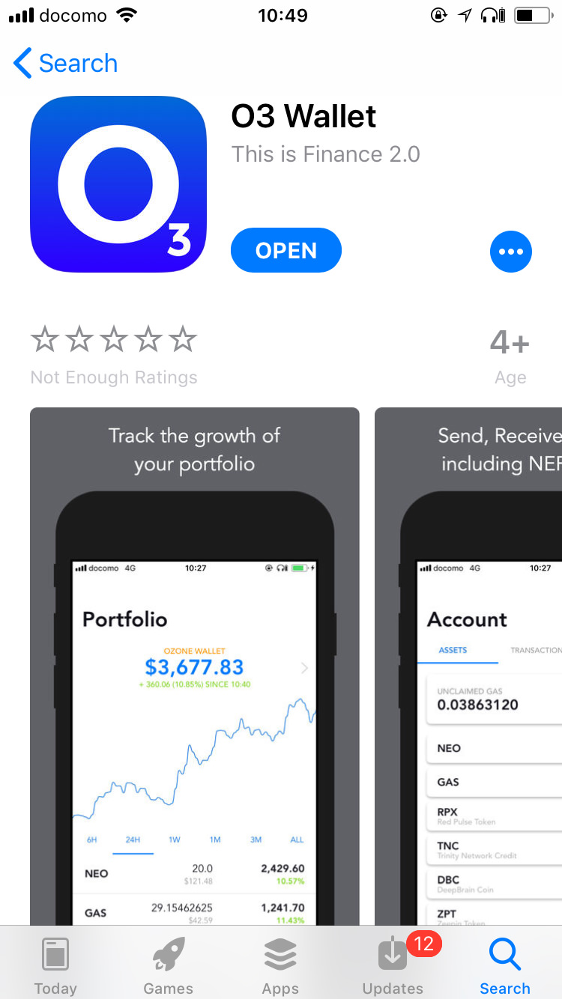
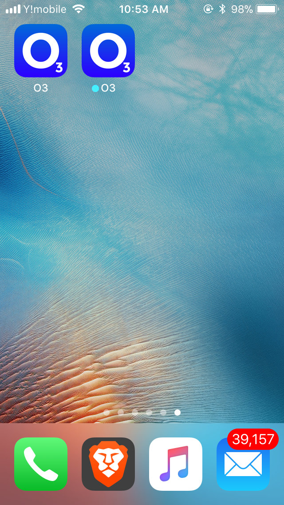

Migrating O3 From TestFlight to Official App Store Version
O3 Wallet is back on the App Store. In this quick guide we’ll show you how to migrate if you’re an existing O3 user.
1. Download the O3 Wallet from the App Store.


2. You should have two versions of the app on your phone now.

The one with the dot, is the old TestFlight version. The one without the dot is the official App Store supported version.
3. Open the new App Store app and login using your same private key.
Please make sure you have your private key backed up offline before performing these next steps.
4. After you have logged in to the new App Store app with your private key it is safe to delete the old TestFlight app.
5. Congrats your now using O3 on an official App Store release :)
— O3 Team